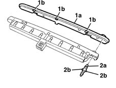

5050C10 rear window washer jet - r+r clean and/or position
- Path
- Procedures > 50 AUXILIARY UNITS > 5050 SCREEN WASHERS AND HEADLAMP WASH/WIPE > 5050C rear wash/wipe > 5050C10 rear window washer jet - r+r clean and/or position
- Kind
- repair procedure (removal / refitting; the operation number is the code)
- Applies to
- all engines; all production periods
- Interactive page
- https://sloeber94.github.io/elrnDB-lYpsln/en/#/2429356
Applies to: all engines; all production periods
 Removing
Removing
 Refitting
Refitting5550D16 third stop light - r+r
1. Remove the lens (1a), releasing the retainers (1b).
2. Remove jets (2a), releasing the retainers (2b).

Applies to: all engines; all production periods
Refitting
RemovingFit the jet to the bulb holders
Fit the lens in its housing and attach it to the retainers.
5550D16 third stop light - r+r
Test the operation of the jet.